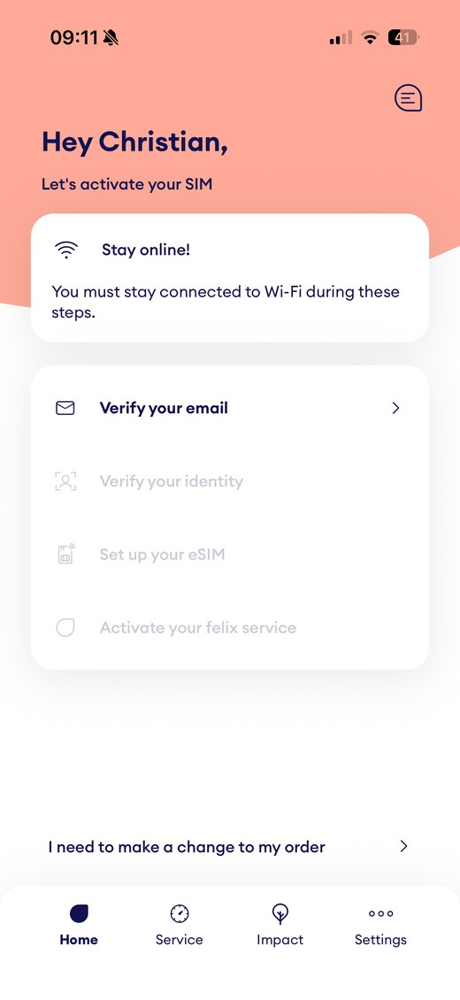
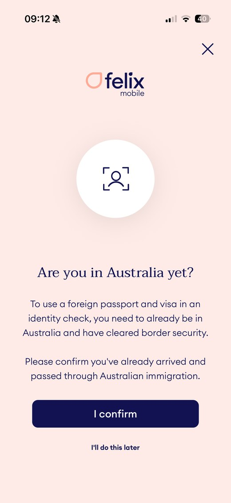
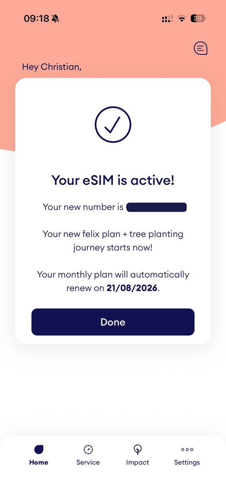

I flew out to Australia ahead of the rest of my family and I have been here for three weeks now, in the Northern Rivers near Byron Bay. One of the first practical things after landing: an Australian phone number. Not just data for a few days, but a real number I can be reached on, for the job search, for the landlord, for the bank, for everything that gets going in a new country.
What I did not expect: I spent two weeks stuck on exactly this. To activate the eSIM you have to verify yourself online. The provider I originally wanted kept rejecting my foreign credit card at activation, without ever saying why. This article is the guide I wish I had had: how to get a number as a newcomer without an Australian bank account, which provider works with a foreign card, which network actually holds up in a semi-rural area, and what it costs.
- For the early days, prepaid is clearly the better choice than a plan: no credit history, no bank account, no fixed address needed, just your passport.
- The most expensive trap is invisible: some providers reject foreign cards at activation. ALDI Mobile failed for me, felix Mobile worked.
- There are three networks: Telstra, Optus, Vodafone. Every cheaper brand rents one of them. Telstra is strongest in the deepest rural areas, Optus and Vodafone have caught up a lot.
- A pricing note: these are Australian dollars, and one Australian dollar is worth clearly less than one US dollar or euro. Check the live rate for your currency before you compare.
- A travel eSIM (Saily, Airalo, Holafly) bridges the first days, but it gives you data, not an Australian number. The real number comes from a local provider.
The fastest way to an Australian number
Short and without detours, this is how I would do it again today:
For the first hours after landing, a travel eSIM that you set up before you leave home. I used Saily for that. It is active in minutes, only needs an email, and gives you data for maps, messengers and WhatsApp calls. It does not give you an Australian number, but as a bridge for the start it is ideal.
For the real number, an Australian prepaid SIM registered with your passport, either as a physical card from the supermarket or as an eSIM in the provider app. One single thing decides between frustration and a smooth start: pick a provider that accepts foreign credit cards. That is exactly where my first attempt failed. What that means, and how I solved it, is in the personal section below.
Prepaid or a plan for newcomers
Quick clarification, because this is often unclear: yes, Australia has plans too, not only prepaid. A plan here is called postpaid, you get the bill at the end of the month. That ranges from a phone on instalments to a plain SIM-only plan with no minimum term that you can cancel monthly. Postpaid is completely normal and widespread among locals.
For your first days as a newcomer, postpaid is still usually the wrong route. The reason is a credit check: postpaid plans generally require a credit check and proof of identity. If you are fresh in the country with no Australian credit history, you often get declined. That history takes a few months to build.
Prepaid flips it around. You pay in advance, so there is no credit check. No Australian bank account needed, no fixed address, no contract lock-in. You keep full cost control, because nothing is charged that you did not top up first. With your passport it works straight away. That is exactly why prepaid is the right choice for the early days. A plan is something to think about a few months in, and many people stay on prepaid anyway because the plans now cover almost everything.
Which network? Telstra, Optus, Vodafone
Australia has only three physical mobile networks: Telstra, Optus and Vodafone (run by TPG). Every other brand, so Boost, ALDI Mobile, amaysim, felix, Lebara, Kogan and dozens more, does not run its own network. They rent one of the three. When you buy a cheaper brand, you are really buying the network behind it.
One more important point if you bring an older phone: the old 3G networks are completely switched off. Vodafone shut its 3G down at the end of 2023, Telstra and Optus followed on 28 October 2024. Check that your phone does 4G and 5G only, because some older devices no longer work afterwards, or can no longer make emergency calls.
- Telstra: the largest network by area and still the strongest in the deepest rural and remote parts. Telstra no longer publishes a population-percentage figure under the new reporting rules, but points to its land coverage of around 2.14 million square kilometres.
- Optus: effectively on par with Telstra in cities and larger regional centres, around 99 percent of the population on 4G, good 5G in the cities.
- Vodafone (TPG): has caught up a lot in the regions. Through a 2025 regional network-sharing deal with Optus it now reaches around 98 to 99 percent of the population. The old reputation that Vodafone is useless in the country no longer holds. It often has the cheapest plans.
For our situation that means: we do not live in a big city, but semi-rural in the Northern Rivers, where there are a few black spots. The old rule of thumb was simply take Telstra. Today it is more nuanced, because Optus and Vodafone have closed much of the gap. My own provider, felix, runs on the Vodafone/TPG network, the very network that gained the most in the regions through the Optus deal.
The only reliable approach is not the rule of thumb but the address-level check. Since 30 June 2026 all three networks (and their cheaper brands) have to show their coverage maps in the same four categories: good, moderate, basic, no coverage. That finally makes the maps directly comparable. Enter your actual address in the provider's coverage checker before you commit. Telstra, Optus and Vodafone each have their own map. It is the only way to know in advance whether you get reception in your living room.
What it really costs
A quick note on the numbers below: they are Australian dollars. One Australian dollar is worth clearly less than one US dollar, and in mid 2026 it sat around 0.60 euro (the rate moves, so check it against your currency at a converter like Wise). A plan that looks like 40 dollars is not 40 of your home-currency units, it is meaningfully less. Keep that in mind so you compare honestly.
Rough prepaid landscape (prices change constantly, always check at the time of buying): the network operators themselves are the most expensive. Telstra plans sit roughly at 45 to 55 AUD, Optus at 35 to 45, Vodafone at 30 to 40. The cheaper brands on those exact same towers sit more around 20 to 30 AUD, often 30 to 50 percent below the network operator. That is where it gets interesting.
As a concrete example, my own plan, felix Mobile (on the Vodafone/TPG network). I checked these values directly on the felix site on 21 July 2026:
- 25 GB for 25 AUD a month, half price for the first 2 months
- 50 GB for 30 AUD a month, 15 AUD a month for the first 3 months with the code FELIX50. That is my plan.
- Unlimited data for 40 AUD a month, but capped at 40 Mbps
- All plans: unlimited calls and texts within Australia, 5G/4G (the two data plans capped at 150 Mbps), unused data rolls over indefinitely, no lock-in, eSIM at no extra cost.
- International calling is not included, but you can add it in the app: unlimited calls and texts to over 40 destinations for 5 AUD a month, or a roaming pack for 20 AUD.
An honest note here: I recommend felix because it worked for me and the price is strong, not because there is a commission behind it. For the early days, what matters most is that activation goes through with a foreign card, more on that in a moment. How we handle money and exchange rates in general is in our cost guide for moving to Australia.
Physical SIM or eSIM
Both routes lead to an Australian number. The difference is comfort and timing.
Physical SIM. The classic card you slot in. Available at provider stands and vending machines at airports, in supermarkets like Coles and Woolworths, and in provider stores. Upside: simple and cheap, and in the end you have a real Australian number. A mistake I made myself: assuming you avoid the card problem by buying the SIM in a shop. Not true. Even the physical SIM from the supermarket has to be activated online, and the same foreign credit card can fail there. I tried it with the physical ALDI SIM and it did not work either. Downside as well: only available after you land.
eSIM. A digital SIM that lands on your phone by QR code or provider app, no physical card. Requirement: your phone has to support eSIM. My iPhone does, checked before departure. Upside: you do it all from home. Downside: the whole process including payment runs online, and that is exactly where a foreign credit card can get stuck. More on that in the next section.
And there is a third variant not to be confused with the others: the travel eSIM from providers like Saily, Airalo or Holafly. You buy and install it before departure, it is active in minutes and often needs no ID, just an email. At its core it delivers data. Some travel eSIMs let you add a phone number with calling minutes, but that is a foreign number (a US number with Saily, for example), not an Australian one. For the first hours or days online after landing, such an eSIM is perfect. It will not give you a real Australian number though, for that you need a local prepaid SIM. That is exactly the route I took, more below.
Setting up an eSIM, step by step
If you have never set up an eSIM: it is easier than it sounds. The process is similar with most Australian prepaid providers. With felix, for example, it all runs in the app, in four steps.

- 1. Check your phone: does your device support eSIM? On current iPhones and many Android phones, yes. Some devices bought abroad are not eSIM-compatible with Australian providers, so check first.
- 2. Buy the plan and confirm your email: online with the provider or in the app. Stay on Wi-Fi for the following steps.
- 3. Verify your identity: the ID check with your passport. Important: for a foreign passport, providers require you to already be in Australia and cleared through border control. This step usually does not work in advance from home.
- 4. Activate the eSIM: the profile is set up, then the number goes live. For me the whole thing was done in a few minutes, and the number was shown at the end.
The moment your Australian number is assigned is right at the end of the in-app activation: once it is set up, the app shows your new number and the plan runs from there. You can prepare the profile in advance from home, but the number only goes live once you activate on the ground.
Bank account, address, card: what you need
The good news for anyone fresh in the country: for a prepaid SIM you need surprisingly little.
- No Australian bank account. Prepaid is paid in advance, nothing is direct-debited.
- No Australian credit history. No credit check, because you pay up front.
- No fixed Australian address. Not needed for the SIM itself, a contact or accommodation address is fine.
- Your passport. An identity check is legally required for an Australian SIM (you provide name, date of birth and address). As a non-resident your passport is enough. For the check with a foreign passport you have to be in Australia and past border control already, for example after arriving on a tourist visa (eVisitor 651).
- A payment method that is accepted. And this is exactly where my problem was.
The invisible trap: the foreign credit card. During online activation you set up a payment account. Some providers do not accept foreign credit cards there and do not say so clearly, they just fail with a meaningless error message. If you do not have an Australian card yet (most newcomers do not in the first weeks), that is a real obstacle. And the physical SIM from the shop does not help either, it also has to be activated online, where the same card fails. The only reliable way out: deliberately pick a provider that explicitly accepts foreign credit cards for activation. For me that was felix. In the ID check the app even asks directly whether you are in Australia with a foreign passport, so foreign customers are clearly accounted for.

My experience: why ALDI failed and felix worked
Here is how it actually went for me. Three stages: the bridge, the frustration, the fix.
The bridge: a Saily travel eSIM. Saily is an eSIM app from the team behind NordVPN, uncomplicated and with a nice app. Back in Germany I bought a small data pack, 3 GB for 6.99 euro, and loaded the eSIM straight onto my phone. It worked without any fuss. After landing I was online right away. Because I had little Wi-Fi on the move, I topped up the 3 GB three times in the first three weeks, roughly 9 GB, and used it for WhatsApp calls and video calls with Lucy and the kids and to send phone videos. Important context: Saily is data at its core. You can add a phone number with minutes, but that is not an Australian number, with Saily it is a US number. As a bridge for the start it is exactly right, no more than that. For pure travel it is my clear recommendation.
The frustration: two weeks of ALDI Mobile. I originally wanted ALDI Mobile because it runs on the Telstra network. But the online activation broke off every time after I had entered all my details and the payment, just a short error message, no explanation. At first I thought it was my cards, since they are debit cards. So I tried several cards, tried PayPal, and in the end even a real credit card belonging to my parents. All failed. After some research it was clear: it was the foreign card, ALDI could not create a payment account with it. Even the prepaid voucher you can buy at the ALDI checkout has to be activated online, and the same error came up. After two weeks I gave up on ALDI. This is not a general verdict on ALDI, the Telstra network is great. But for someone with a foreign card it was a dead end.
The fix: felix Mobile. I kept looking and landed on felix, mainly because the site explicitly stated that verification works with a foreign card. And sure enough: payment and the ID check with a German passport went through without trouble, the eSIM was active within minutes, and I had my Australian number. On top of that felix is even cheaper than ALDI. I took the 50 GB plan for 30 AUD, 15 AUD for the first three months, with unlimited calls and texts within Australia. I deliberately chose 50 GB rather than unlimited, because I stay well under it, and I can change the plan any time.

One downside remains compared with the ALDI plan I originally wanted: international calls are not included with felix. But for 5 AUD a month I can add unlimited calls to over 40 destinations, and Germany is on the list. I will test for a month whether that beats plain WhatsApp calls, especially on the move where reception is sometimes weaker.
What I will add once I have tested felix in daily life for a few weeks: how the reception really is on the move in the Northern Rivers, and how the 5 AUD international pack compares with WhatsApp calls. That will come here as a dated update.
Frequently asked questions
How do I get a prepaid SIM card in Australia?
Prepaid starter packs are sold at airports, in supermarkets like Coles and Woolworths, in provider stores and online, either as a physical SIM or as an eSIM. You do not need an Australian bank account or a credit history, only your passport for the legally required identity check. For the ID check with a foreign passport, you usually need to already be in Australia and cleared through border control.
Why does my foreign credit or debit card fail during SIM activation?
Some Australian providers reject foreign cards when you set up the payment account, without saying so clearly. In my case the online activation with ALDI Mobile failed repeatedly for exactly this reason, with several debit and credit cards and with PayPal. A provider that explicitly accepts foreign cards solves it. For me that was felix Mobile, where payment and the ID check went through with a German passport and a foreign card. Alternatively, buy the physical SIM in a shop and pay there by card or cash, but note it still has to be activated online.
Can I set up the Australian eSIM before I leave home?
You can often install the eSIM profile in advance, but providers usually only run the ID check with a foreign passport once you have arrived in Australia and cleared border control. So the number effectively goes live after you land. For the first hours online, bridge the gap with a travel eSIM, which gives you data but not an Australian number.
Do I need a bank account, an address or a credit history for an Australian SIM?
For prepaid, no. Prepaid is paid in advance, so there is no credit check, no Australian bank account and no fixed address required. You only need an identity check, and as a non-resident your passport is enough. A plan (postpaid) usually does require an Australian credit history, a bank account and an address, so it is more something for later.
Which network is best in Byron Bay and the Northern Rivers?
There are three physical networks: Telstra, Optus and Vodafone (TPG). Telstra is still the strongest in the deepest rural areas. Optus and Vodafone have caught up a lot, partly through a 2025 regional network-sharing deal between Optus and TPG. For a region like the Northern Rivers with a few black spots, the address-level coverage check on each provider matters more than any rule of thumb. Since 30 June 2026 all providers use the same four categories, so the maps are finally comparable.
As of: 21 July 2026. I flew out ahead, Lucy and the kids follow at the end of July. I will add the reception experience with felix in daily life once I have tested it over several weeks.
Last updated: 21 July 2026 · Sources: provider information from felix Mobile (plans, add-ons and activation flow checked on 21 July 2026), Telstra, Optus, Vodafone and ALDI Mobile; ACMA (prepaid ID requirement, 3G switch-off); ACCC and ARN (Optus-TPG network sharing 2025); Finder and WhistleOut (coverage, new four-category maps); felix international-calls page (over 40 destinations including Germany); Saily information (data at the core, optional phone-number add-on is a US number); Finder and Reviews.org (prepaid vs postpaid, credit check). Exchange rate AUD/EUR via Wise (~0.60, mid 2026). Personal experience in the section "My experience" is from our own use.